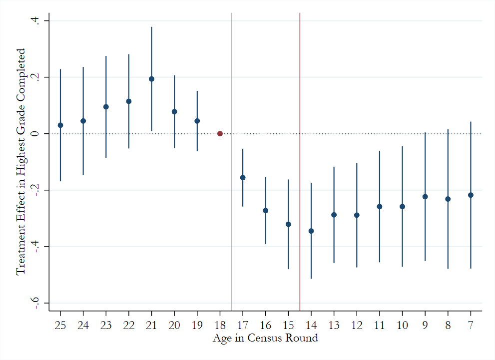

Publications
Are People Willing to Pay for Reduced Inequality?
(with Brian Hill)
Management Science, 2024
Would consumers be willing to pay more for goods for which there is less inequality in wages across those involved in their production? In incentive-compatible behavioural choice studies on representative samples of the English and US populations, we find significantly positive willingness to pay for such inequality reductions in over 80% of subjects. Whilst it varies with political leaning and the extent of the inequality reduction, willingness to pay is positive across the political spectrum and for all studied inequality differences. It is higher for more intuitive and informative inequality-reporting formats. Our findings have policy implications for both governments and firms. On the one hand, they suggest the promise of universal provision of product-level inequality information as a tool for moderating income inequality. On the other, they highlight the potential relevance of inequality reporting for firms’ marketing strategies.

Working Papers
The Long Shadow of Early Education: Evidence from a Natural Experiment in the Philippines
(with Dean Yang)
How does early educational quality affect long-term academic outcomes? We exploit a natural experiment in the Philippines—a flawed implementation of mother-tongue education policy in public schools for kindergarten through Grade 3 starting in 2012—to examine this question. This policy led to an unexpected decline in educational quality, affecting only a subset of schools strongly predicted by pre-policy student language composition. We use language composition variables as instrumental variables for treatment. Leveraging panel data and confirming robustness to pre-trends, we find that the policy implementation: 1) had null effects on Grade 3 test scores, 2) led to declines in Grade 6 test scores across all subjects, and 3) reduced student enrollment and teacher retention in public primary schools. Employing a triple-difference strategy with Philippine Census data (across cohorts, localities, and 2010/2020 censuses), we show that by 2020, younger cohorts in highly-exposed localities completed 0.3 fewer years of schooling. Our findings demonstrate the substantial and enduring impact of early education quality on later academic achievement, contributing to the literature on human capital formation and education policy effectiveness.
Work in progress
Does It Matter That Carbon Taxes Are Regressive?
(with Ashley C. Craig & Dylan T. Moore)
We ask how externalities should be taxed when redistribution is costly. In our model, the government raises revenue using distortionary income and commodity taxes. If more or less productive people have identical tastes for the externality-generating activity, the government optimally imposes a "Pigouvian" tax equal to the marginal damage from the externality. This is true regardless of whether the tax is regressive. However, if regressivity partly reflects different preferences of people with different incomes, the tax optimally deviates from the Pigouvian benchmark because this helps redistribute income efficiently. The overall tax may be higher or lower, and may even reverse sign relative to the externality. We derive sufficient statistics for optimal policy, and use them to study carbon taxation in the United States. Throughout most of the income distribution, our empirical results imply an optimal carbon tax below marginal damage, but this reverses for very high-earning households.
Colonizer Identity and Economic Development: Evidence from the Scramble for Africa
This paper examines the long run economic impacts of differential European colonial rule in Africa, by exploiting differences arising from the arbitrary borders established during the Scramble for Africa (1876-1912). Using a regression discontinuity design along the full set of British/French colonial borders, I explore the impact of colonizer identity on measures of economic development. I find persistent effects of the legacy of colonial institutions, with areas formerly under British rule exhibiting higher nighttime light intensity and lower malaria prevalence at the grid cell level relative to areas formerly under French colonial rule. Additionally, at the individual level, these areas display higher educational attainment, lower unemployment rates, and improved public good provision. I explore mechanisms and find evidence in support of sharp discontinuities in formal institutions at the border, such as the structure of property rights and the quality of government, as opposed to informal institutions such as proxies for entrepreneurship and the prevalence of Protestantism.